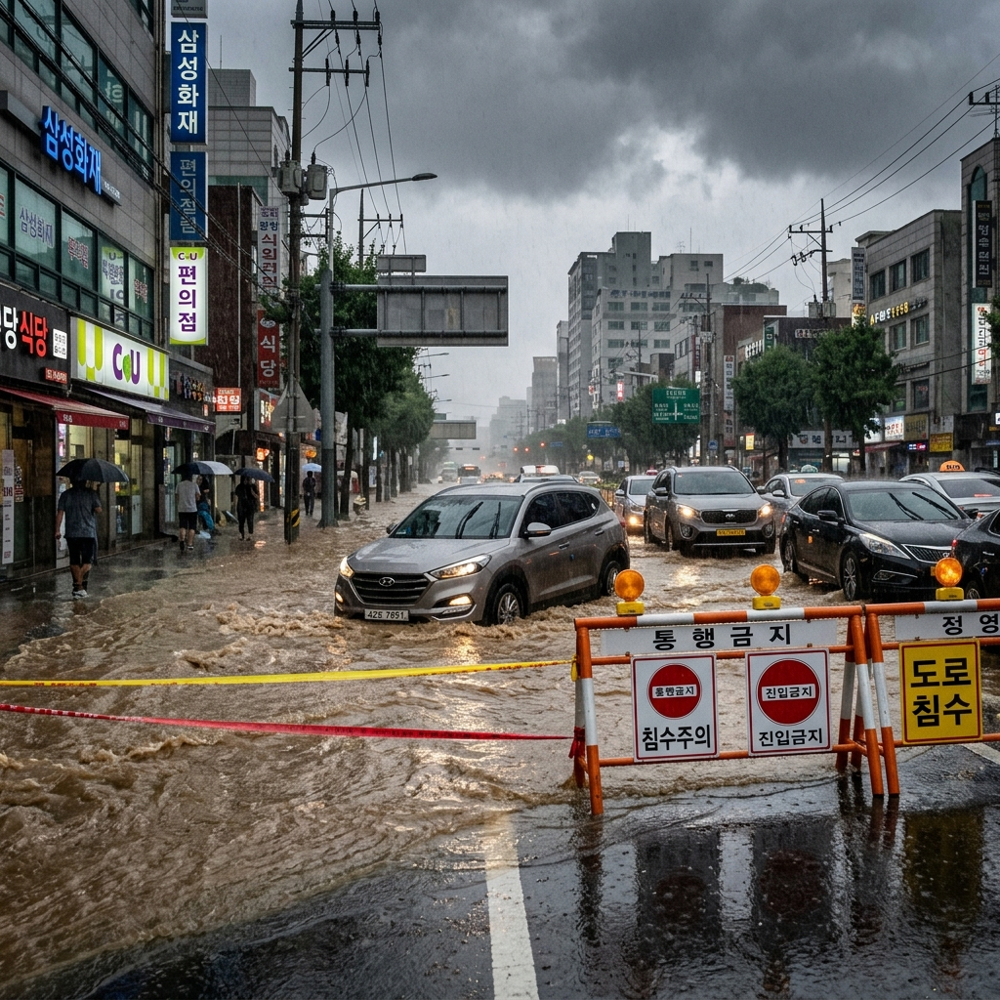
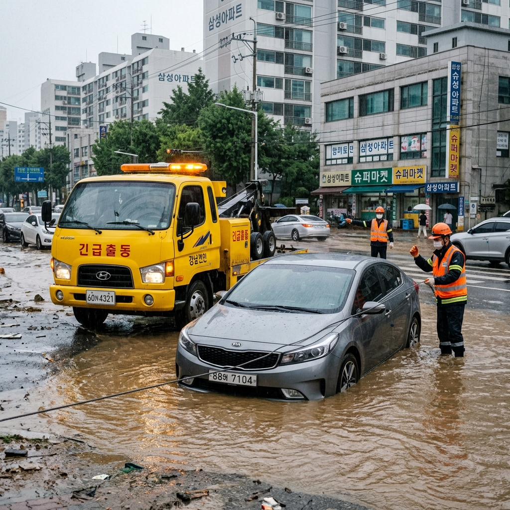
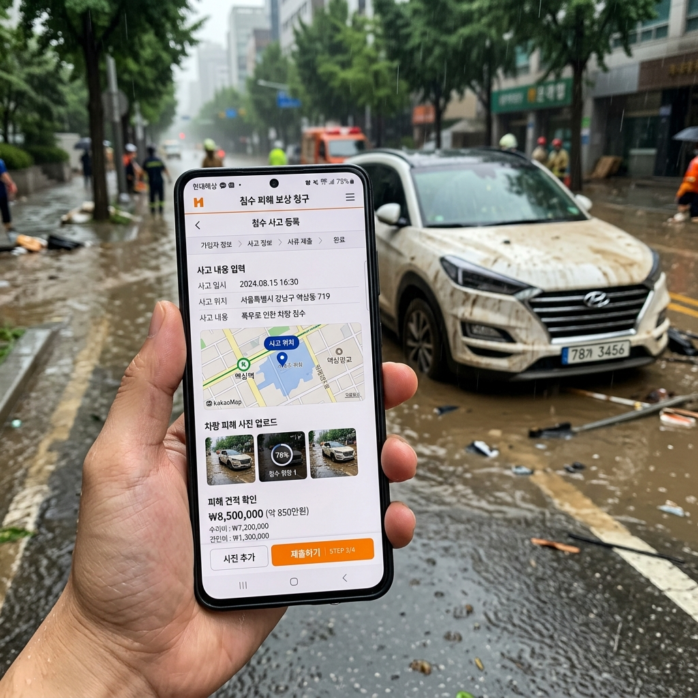

장마철 침수 차량·도로 대처, 보험 청구까지 챙겨야 할 것들
✍️ 직접 겪어보니
몇 해 전 7월, 국지성 호우가 내리던 날 퇴근길에 평소 지나다니던 도로에 갑자기 물이 차기 시작하는 걸 목격했습니다. 앞에서 승용차 한 대가 그냥 진입했다가 엔진이 꺼지는 상황이 생겼고, 저는 다행히 뒤에서 그 모습을 보고 즉시 후진해 우회 도로를 찾았습니다. 그 일 이후로 장마철에는 습관적으로 우회 경로를 미리 파악해 두고, 침수 경보 문자가 오면 일단 차를 세우고 상황을 살피는 것이 몸에 밴 것 같습니다. 이 글은 그 경험과 이후 조사한 내용을 정리한 것입니다.
01. 장마철 시작 전 해야 할 차량 점검
장마철이 시작되기 전 차량 상태를 미리 점검하면 침수 피해를 예방하거나 피해를 최소화할 수 있습니다.
배수구·하수구 확인: 자주 주차하는 지역의 배수구가 잘 막혀 있지는 않은지 확인해 두세요. 집 주변 저지대 여부도 파악해 두는 것이 중요합니다.
와이퍼·타이어: 폭우 시 시야 확보를 위해 와이퍼 블레이드 상태를 점검하고, 타이어 트레드 깊이가 1.6mm 이상인지 확인하세요. 노면 마찰이 부족한 타이어는 젖은 도로에서 제동 거리가 길어집니다.
주차 위치 변경: 장마·폭우 예보가 있을 때는 지하 주차장이나 저지대 주차를 피하고 가능하면 고지대나 실내 시설로 이동시켜 두세요. 지하 주차장은 입구에서 순식간에 물이 밀려들 수 있습니다.

장마철 도심 침수 도로 모습 / AI 제작 이미지
02. 침수 도로 진입 기준 — 어디까지가 위험선인가
침수된 도로에 진입 가능한 수심 기준이 있습니다. 수심 15cm(성인 발목 높이)가 일반적인 안전 진입 가능 기준으로 통용됩니다. 이를 넘어서면 차량 하단 부품에 물이 닿기 시작하고, 30cm가 넘으면 소형 차량은 물에 뜨기 시작합니다.
눈으로만 수심을 판단하기는 어렵습니다. 앞에서 진입한 차량이 없거나, 진입한 차량이 중간에서 멈추는 것이 보인다면 절대 진입하지 마세요.
차도 한쪽이 막혀 돌아가더라도 침수 도로 진입보다 우회가 훨씬 안전합니다. 내비게이션 앱(카카오맵, 네이버 지도)은 폭우 시 침수 도로 실시간 정보를 제공하는 경우가 있으므로, 이동 전에 경로 우회 안내를 확인하세요.
03. 차량이 침수 시작할 때 해야 할 행동 순서
주행 중 갑자기 차에 물이 들어오기 시작한다면 신속하게 다음 순서로 대응해야 합니다.
1단계: 즉시 엔진을 끄고(물이 들어오기 전이라면 시동을 켠 채로 빠르게 이동), 창문을 열어두세요. 완전히 잠기기 전 창문을 열어 두면 탈출 경로가 생깁니다.
2단계: 문이 열리면 즉시 탈출. 수압이 너무 강해 문이 열리지 않는다면 창문을 깨고 탈출해야 합니다. 비상 탈출용 유리 파쇄기를 차 안에 비치해 두는 것이 좋습니다.
3단계: 차에서 나온 후 119에 신고하고, 가능하면 높은 곳으로 이동합니다. 물이 흐르는 방향과 반대 방향으로 움직이세요.
⚠️ 절대 하지 말아야 할 것
침수된 차를 끄지 않고 계속 운전하며 전진하려 하면 엔진에 물이 유입되어 엔진 파손(워터해머 현상)이 발생합니다. 또한 차가 잠기기 시작할 때 손으로 문을 억지로 당기는 것은 수압 때문에 오히려 힘만 낭비합니다.
04. 침수 차량 확인 — 피해 범위 파악하는 법
차량이 침수된 후 현장에서 직접 확인할 수 있는 피해 범위 파악 방법입니다.
시동 금지: 침수 후 시동을 켜면 엔진 내부에 들어간 물이 빠르게 내부를 손상시킵니다. 현장에서 절대 시동을 걸지 마세요.
외부 확인: 차량 도어 실(weather strip) 위로 물이 넘어갔는지, 바퀴 중심까지 잠겼는지 등으로 피해 정도를 1차 파악할 수 있습니다.
실내 확인: 시트 아래, 트렁크 내부, 대시보드 아래 공간의 침수 흔적(물 자국, 진흙)을 사진으로 기록해 두세요. 이 사진이 보험 청구 시 증거 자료가 됩니다.

침수 차량 견인 구조 현장 / AI 제작 이미지
05. 자동차보험 침수 청구 — 어떤 담보에서 나오나
침수 피해 보상은 자동차보험에서 자기차량손해(자차) 담보를 통해 처리됩니다. 단, 자차 담보에 가입되어 있지 않으면 보상을 받을 수 없으니 본인 보험 가입 내역을 반드시 확인하세요.
자차 담보에 가입되어 있다면 자연재해(폭우·홍수)로 인한 침수 피해도 보상됩니다. 다만 자기부담금(보통 50만원 이내)이 발생하며, 보험 계약 조건에 따라 차이가 있습니다.
보험 청구 절차:
1. 사고 발생 직후 보험사 긴급출동 서비스 번호로 연락(견인 요청)
2. 현장 사진 다수 촬영(외부·내부·침수 수위 흔적 등)
3. 가까운 정비소로 차량 이송 후 손해사정사 방문 사정 진행
4. 수리비 견적 승인 후 수리 진행
5. 수리비가 차량 가액을 초과하면 전손 처리(실제 차량 가액 기준 보상)
06. 부적절 자조 처리 시 보험금 삭감 주의
침수 차량을 보험사에 신고하기 전에 세차하거나, 시동을 걸어 상태를 확인하거나, 임의로 수리를 진행하면 보험 청구 시 불이익이 생길 수 있습니다.
특히 시동을 임의로 켠 사실이 확인되면 '운전자 과실에 의한 추가 손상'으로 분류되어 보상에서 제외되는 부분이 생길 수 있습니다. 내연기관에 물이 유입된 상태에서 시동을 거는 행위는 엔진을 심각하게 손상시키기 때문입니다.
보험사가 현장 확인을 마치기 전에는 차량 상태를 인위적으로 변경하지 말고, 사진·영상으로 기록만 해 두세요. 분실·도난된 물건에 대한 보상은 자동차보험이 아닌 별도 휴대품손해 담보나 다른 보험에서 처리됩니다.
07. 지하 주차장 침수 — 대피 타이밍 잡는 법
지하 주차장 침수는 진입 후 탈출이 불가능해지는 속도가 빠르기 때문에 특히 위험합니다. 주요 대형 빌딩 지하 주차장 침수 사고의 경우 진입 후 10분 이내에 출구가 막히는 사례도 있었습니다.
대피 판단 기준을 명확히 해 두세요. 강수량이 시간당 30mm 이상(집중호우 기준)이거나, 인근 도로에 물이 고이기 시작하거나, 침수 위험 문자(기상청·지자체)가 도착하면 지하 주차장 이용을 즉시 중단하고 차량은 포기하는 것이 인명 피해를 막는 첫 번째 원칙입니다.
차량보다 생명이 먼저입니다. 차는 보험으로 처리할 수 있지만, 지하 주차장 침수 중 탈출 실패는 인명 사고로 이어질 수 있습니다.

자동차보험 침수 피해 청구 앱 화면 / AI 제작 이미지
08. 재난지원금·행정 지원 — 보험 외 구제 방법
자차 담보가 없거나, 보험 처리 후에도 남은 피해가 있는 경우 행정 지원을 활용할 수 있습니다.
재난 피해 신고: 거주지 관할 읍면동 행정복지센터(주민센터)에 재난 피해 신고를 하면 지자체 재난지원금 또는 생활용품 지원 대상 여부를 판단받을 수 있습니다.
농기계·시설 피해: 농·어업인의 경우 농업재해보험(NH농협) 또는 어업재해보험에서 별도 지원이 가능합니다.
소상공인 피해: 사업장이 침수 피해를 입은 소상공인은 소상공인시장진흥공단(1357)에 재난 대출 지원 상담을 받을 수 있습니다.
행정 지원 신청 기한이 있으므로(보통 피해 발생 후 10~15일 이내), 피해가 확인되면 가능한 한 빨리 신고하세요.
09. 장마철 사전 대비 체크리스트
장마철 피해를 줄이기 위해 미리 준비해 두어야 할 것을 정리했습니다.
차량: 자차 담보 가입 여부 확인 / 비상 유리 파쇄기(유사시 탈출용) 구비 / 주차 위치를 저지대에서 고지대로 이동 / 보험사 긴급출동 번호 저장
운전 중: 침수 도로 진입 금지(수심 15cm 기준) / 기상청·지자체 재난 문자 즉시 확인 / 우회 경로 미리 파악
귀가 후: 지하 주차장 진입 전 강수량·침수 경보 확인 / 건물 방수·배수구 사전 점검
비상연락처 저장: 119(소방구조) / 보험사 긴급출동 / 견인 서비스 / 지자체 재난 신고 콜센터
📝 작성자 메모
이 글의 정보 기준일은 2026년 6월이며, 자동차보험 침수 보상 기준은 금융감독원(fss.or.kr) 자동차보험 약관 해설 및 각 보험사 표준 약관을 기준으로 작성되었습니다. 자기차량손해 담보 보상 범위·자기부담금·보상 제외 조건은 보험사마다 다를 수 있으므로 정확한 내용은 본인 보험 계약서 또는 보험사 고객센터를 통해 확인하시기 바랍니다. 재난 지원 제도는 피해 규모 및 지자체 예산에 따라 달라질 수 있으며, 최신 공고는 행정안전부(mois.go.kr) 또는 거주지 관할 주민센터에서 재확인하세요.